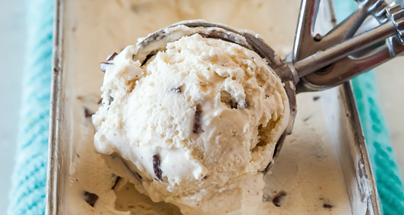
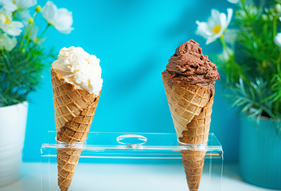
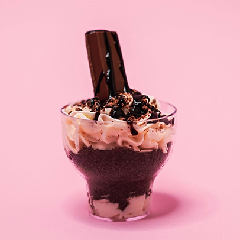
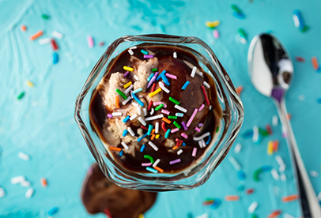
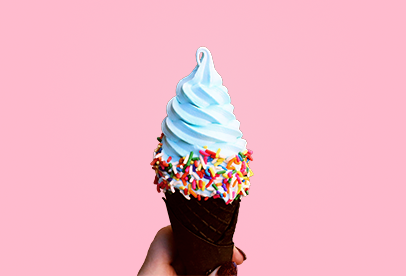
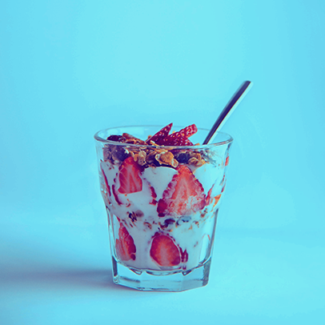
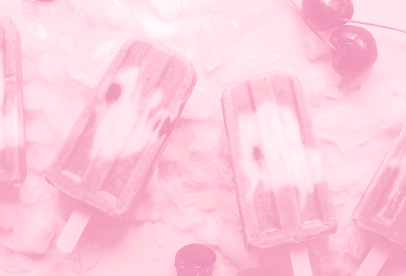

In 1905, Rodger Melman built his very own ice cream stand right outside the May Beach boardwalk. It was a modest job, but he enjoyed every minute of it. To the regulars, Rodger was known for his ear-to-ear smile. What started as a hobby turned into a day job, and when the Melman family grew, so did the shop. Four generations later, Melman’s Homemade is still serving up joy to the community, one scoop at a time.
It’s a beautiful thing when something so simple can bring a whole community together
You can’t go wrong with the classic. Our homemade waffle cones are freshly baked every morning.
See more
One scoop of any flavor, with your choice of 3 toppings (not including the whipped cream, of course).
See more
Three generous scoops, bathed, sprinkled, or drizzled with your favorite topping.
See more
Your choice of any 1 or 2 of our world class flavors: Vanilla, Chocolate, Strawberry, Mint, Cookies & Cream, and Coffee.
See more
The yogurt that makes our famous soft serve, layered with low carb, high-protein oats and fresh fruit.
See more
Every wedding is a family wedding, and when you come to Melman’s, we treat you like part of our own.
See more
Small portions of your favorite ice creams and baked goods that are equal parts decorative and delicious.
See more
Our wide variety of sweet beverages, festive sundaes, and comforting pastries add life to every gathering.
See more
Nothing says celebration like a refreshing popsicle made with real fruit or a classic ice cream cake.
See more
